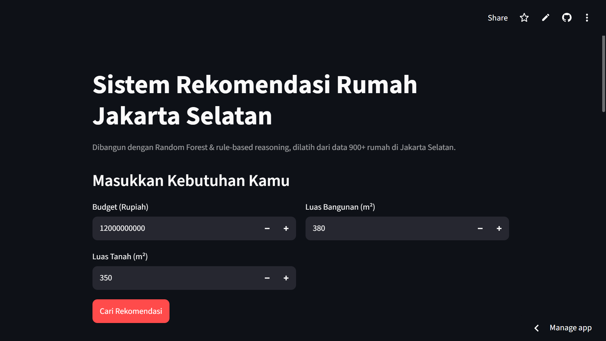
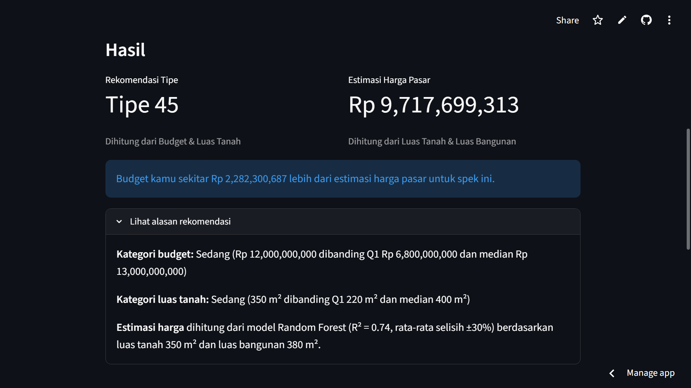
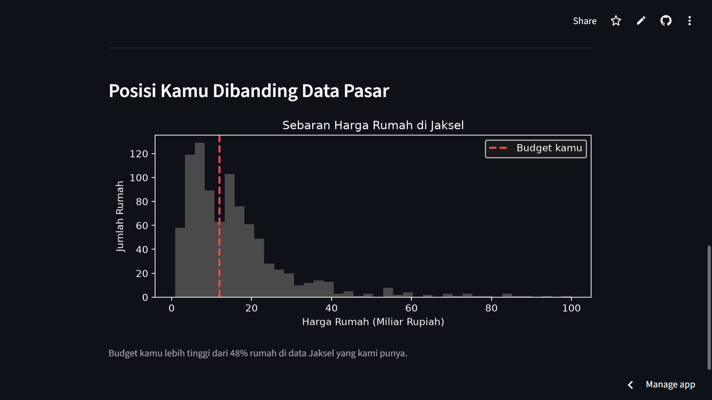

House Recommendation System with Machine Learning Price Estimation
A hybrid rule-based and machine learning web app that recommends house types and estimates market prices, trained on 900+ real house listings from South Jakarta.

Click the preview above to try the live app in a new tab.
What Is This Project?
This project began as a group assignment for my Artificial Intelligence course: a basic forward-chaining expert system with five hardcoded IF-THEN rules, built together with four teammates.
After the course ended, I independently extended it into a complete data science and web application project, replacing the hardcoded rules with thresholds computed directly from a real housing dataset, adding a trained machine learning model for price estimation, and turning it into a live web app anyone can actually use, not just a notebook that runs once in a classroom.
Tech Stack
Why the original version needed more.
The original system relied on five hardcoded IF-THEN rules based on assumptions, even though a real housing dataset was available and never actually used.
There was no machine learning involved and no way to measure how accurate a recommendation actually was against real market prices.
The system only ran inside a Colab notebook, accessible only to whoever had the file, not something anyone else could actually try.
From Notebook to Data Pipeline
After the app was live, I revisited the project from a data engineering angle. The original workflow read directly from an Excel file and cleaned it inline inside the training notebook, everything living in one place with no separation of concerns and nothing to audit.
I rebuilt the data layer around a PostgreSQL warehouse: a Python ETL script handles extraction and cleaning, a parallel SQL script reproduces the same cleaning logic using window functions, and an automated validation script checks the result before it's allowed anywhere near the model.
Pipeline at a glance
- Excel →
raw_rumah→clean_rumahtables in PostgreSQL (Neon) - Deduplication and outlier filtering reproduced in pure SQL using
ROW_NUMBER()andPERCENTILE_CONT() - 8 automated data quality checks (nulls, duplicates, value ranges) — 8/8 passing
- Training notebook reads from the validated
clean_rumahtable instead of the raw file
What The System Does
Budget and land size thresholds are computed from real quartiles of 900+ South Jakarta house listings, not guessed numbers.
A Random Forest regression model trained on land and building area estimates market price, benchmarked against Linear Regression and Decision Tree before being selected.
Every recommendation shows the exact quantile comparison behind it, and every price estimate states the model's measured accuracy, not just a bare number.
Warns on unrealistic input combinations, and visualizes where a user's budget sits relative to the actual market price distribution.
Choosing the Right Model
Three regression models were trained and compared on log-transformed price data before picking a final one that balances accuracy and simplicity, rather than defaulting to the most complex option.
| Model | R² | MAPE |
|---|---|---|
| Linear Regression | 0.561 | 45.5% |
| Decision Tree | 0.687 | 33.7% |
| Random Forest | 0.736 | 30.1% |
Feature importance analysis also showed land area and building area account for roughly 98% of the model's predictive power, so the final model was simplified to those two features, reaching an R² of 0.738 and MAPE of 29.8%, on par with the full 5-feature version.
A Closer Look



Reflection
This was the first project where I took something built purely for a grade and pushed it further after the course had already ended, without anyone asking me to. Replacing guessed thresholds with real quartiles, and comparing multiple models instead of picking one blindly, taught me the difference between an answer that works and one I can actually defend.
Building the reasoning trace also changed how I think about AI products: showing why a system reached a conclusion matters just as much as the conclusion itself, especially for something as high-stakes as a house purchase.
Coming back to rebuild the data layer months later taught me a different lesson: a model is only as trustworthy as the pipeline feeding it. Writing the same cleaning logic twice, once in Python and once in SQL, made me appreciate how much can silently go wrong between "the data looks fine" and "the data is verified."